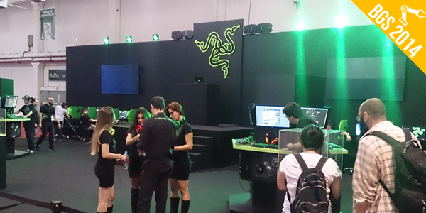

Quem está acostumado a acompanhar o mundo da tecnologia certamente já ouviu falar da Razer. A empresa que fabrica equipamentos para games e computadores é relativamente nova: ela iniciou suas atividades em 2005. De lá pra cá, a Razer trilhou um caminho de sucesso e firmou seu nome como uma das maiores empresas de tecnologia da atualidade. A companhia trabalha com uma grande linha de produtos — passando por mouses, teclados e notebooks —, mas todos eles utilizam a mesma lógica: qualidade e inovação.
USA (San Francisco) Office 201 3rd Street, Suite 900 San Francisco, CA 94103 USA
